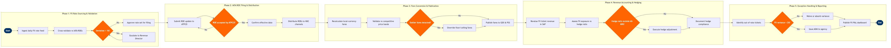

| Step | L4 Step Name | KPI / Target | Pain Point / Risk | Gate |
|---|---|---|---|---|
| 1.1 | Ingest daily FX rate feed from Reuters Refinitiv | Rate feed received by 06:00 local time on 100% of trading days | Reuters feed delays or gaps require fallback to Bloomberg Terminal; most legacy PSS integrations lack auto-failover, creating manual intervention risk on volatile trading days | |
| 1.2 | Cross-validate rates against IATA published ROEs | Variance detection accuracy 100%; processing time <30 minutes | IATA ROE publication follows a monthly cycle while market rates move daily; EM currencies (ARS, TRY, NGN) can deviate 2-5% intraday, making IATA ROE structurally stale | |
| 1.3 | Approve or escalate FX rate set for filing | Escalation decision completed within 2 hours of rate receipt | No system-enforced threshold in ATPCO Rate Desk; approval workflow is email-based, creating audit gaps and delay risk during high-volatility sessions | ⚠ |
| 2.1 | Submit ROE update to ATPCO Rate Desk | ROE filed ≥24 hours before effective date per IATA Resolution 024; 0 late filings per quarter | ATPCO filing window closes at 23:59 ET; submissions after cutoff are auto-deferred 24-48 hours, causing pricing lag during currency crises | |
| 2.2 | Confirm ROE acceptance and GDS distribution trigger | ROE active in all GDS channels within 4 hours of ATPCO acceptance | GDS cache refresh latency (Sabre, Amadeus, Travelport) can delay active ROE by up to 6 hours post-ATPCO acceptance, creating a window where agents book at stale rates | ⚠ |
| 2.3 | Distribute updated ROEs to NDC and direct channels | NDC distribution complete within 1 hour of ATPCO acceptance; 100% connected-channel coverage | NDC ROE integration varies by OTA implementation — some require manual rate push via API; no universal real-time ROE feed standard causes parity gaps between GDS and NDC channels | |
| 3.1 | Recalculate local-currency published fares in PSS | Fare recalculation completed within 2 hours of ROE update; 0 pricing calculation errors | Altéa PSS fare recalculation runs as a nightly batch by default; intraday ROE changes require a manual override batch run, creating a ticketing window of up to 8 hours with stale local-currency fares | |
| 3.2 | Validate converted fares against competitive price bands | <2% of fare basis codes flagged as outliers; validation cycle completed within 4 hours | Currency devaluation events (e.g. ARS, TRY, NGN) render mechanical ROE-converted fares commercially unviable; NRM lacks automated local-market floor price rules, requiring manual intervention | ⚠ |
| 3.3 | Override floor/ceiling fares for distressed currencies | Floor override filed within 4 hours of outlier flag; 100% of overrides carry documented SME approval | ATPCO has no automated floor-price rule engine — every override requires a discrete manual tariff action; during hyperinflationary events this creates a filing backlog and inconsistent local pricing | |
| 3.4 | Publish final fare tables to GDS channels and PSS | 100% GDS channel parity achieved within 6 hours of ROE effective date | Three-GDS distribution (Sabre/Travelport/Amadeus) requires separate cache flush commands with no coordinated purge mechanism; partial updates cause GDS parity failures and agency ADM disputes | |
| 4.1 | Revalue foreign-currency ticket revenue in SAP FI | Revaluation completed by T+1 period close; FX variance <0.1% versus BSP settlement amount | IATA BSP settlement lag of up to 15 days creates a timing mismatch with daily SAP revaluation; hedged and unhedged positions must be tracked in separate GL accounts but airline chart of accounts often conflates them | |
| 4.2 | Assess net FX exposure against Treasury hedge ratio | Hedge ratio maintained within 60-80% for top-10 currency exposures; monthly review cycle | Fuel and FX hedging compete for the same balance sheet capacity; treasury teams frequently lack dedicated FX analytics, relying on SAP TRM supplemented by Excel pivot tables that introduce manual error risk | ⚠ |
| 4.3 | Execute hedge adjustment via Treasury instruments | Hedge execution within 24 hours of gap identification; hedge effectiveness ≥80% per IFRS 9 | IFRS 9 hedge accounting documentation requirements are operationally burdensome; misclassification of FX derivatives as non-hedging instruments forces mark-to-market P&L volatility that cannot be offset | |
| 5.1 | Identify tickets issued at superseded exchange rates | Exception identification completed within 24 hours of each ROE change; 100% ticket population audited | Altéa PSS does not auto-flag tickets issued during the gap between ROE update and GDS cache refresh; full audit requires manual cross-referencing of ticketing timestamps against ROE effective times | |
| 5.2 | Determine ADM issuance or waiver for out-of-rate tickets | ADM issued or waiver granted within 5 business days of identification; affected ticket volume <0.5% of monthly issuance | ADM disputes with travel agencies escalate to IATA resolution, which is time-consuming and costly; airlines routinely absorb sub-threshold FX variances rather than risk agency relationship damage | ⚠ |
| 5.3 | Publish monthly FX P&L impact dashboard | Dashboard published by 5th business day of following month; FX impact reported to ±$100K accuracy | FX P&L attribution across routes requires custom data joins between Altéa ticketing data and SAP GL — no native cross-system FX reporting; data pipeline maintenance creates monthly close bottleneck |